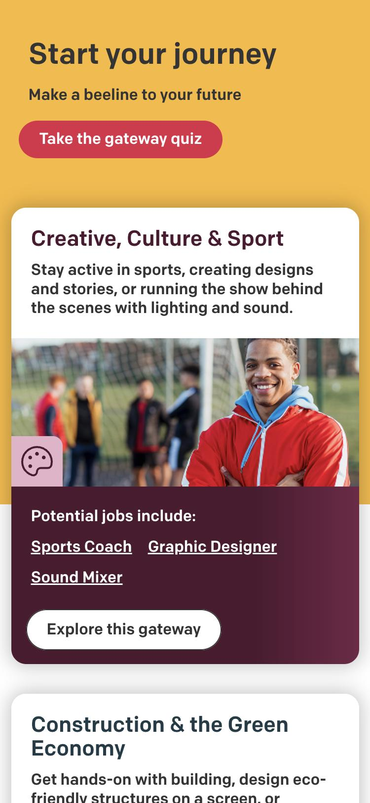
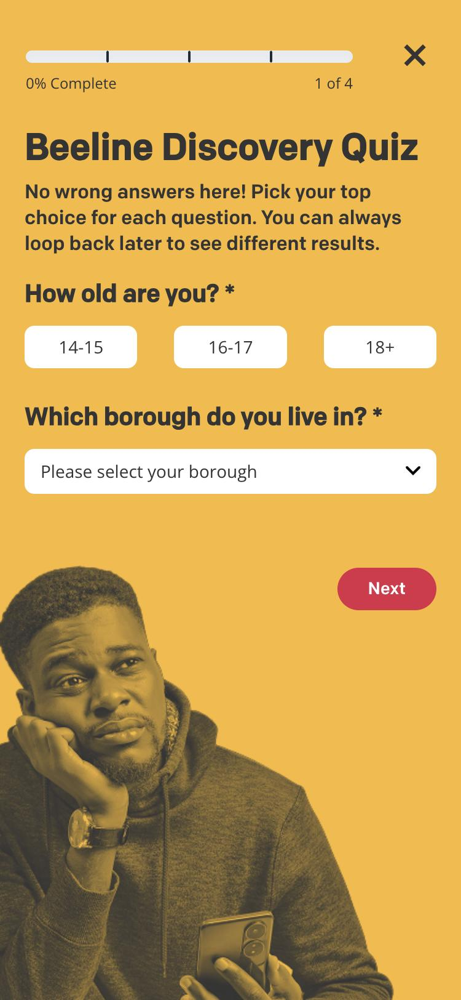
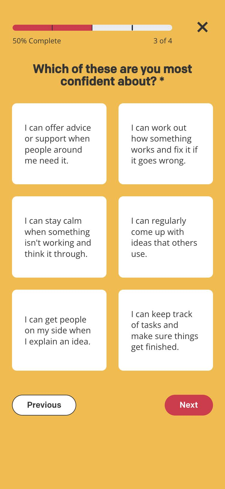
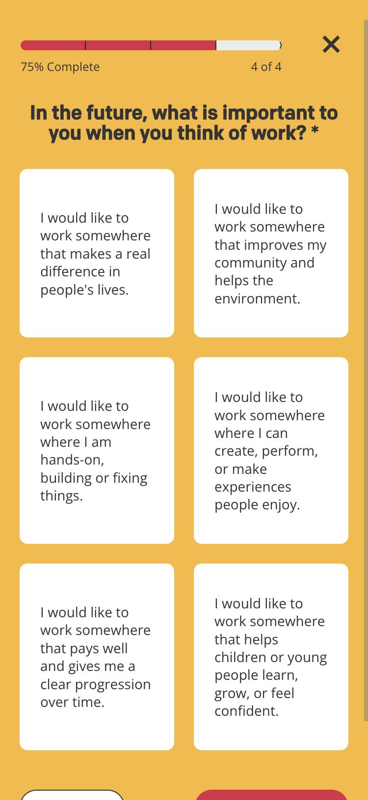

◂ CONTENTSPROJECT 01 · GMCA · P. 3–8IN DISCOVERY, IN DEVELOPMENT
PROJECT 01 · THE SYSTEMS UNDER A PUBLIC SERVICE
Beeline
Beeline?BEELINEThe Greater Manchester service that helps young people up to 25 explore careers and find a next step. is the young person’s version of the MBacc?MBACCThe Greater Manchester Baccalaureate, a framework that shows young people technical and academic routes into work., Greater Manchester’s framework of technical and academic routes into work. It runs across the region’s ten local authorities and serves people up to 25 years old.
ROLE · PROGRAMME MANAGER, BEELINEMANCHESTER · 2026 – PRESENT
PROBLEMYoung people aged 14 to 18 are unsure what jobs exist and what qualifications they need.
→
MY PART
Discovery QuizLIVE
Beeline Unplugged?BEELINE UNPLUGGEDThe offline card toolkit version of Beeline, for groups with low digital access or additional needs.1,200 DECKS
Planner Board and its AI layerIN DESIGN
Features across the YEO portfolioNOW
→
OUTCOMEJob searches?WHY JOB SEARCHESA job search shows a young person knows which jobs to look for. The quiz shows them how they fit into the gateways and where to start, so they leave with a clearer idea of what to search for. Quiz finishers open more than twice as many job searches as visitors from the landing page. opened per visitor
Quiz finishers5.4
Landing page2.4
Phase 1 live since 8 July 2026.
THE JOB COVERED · APPROXIMATE SHARE OF MY TIME
DISCOVERY AND STRATEGYProblem model and roadmap
UX AND UIDiscovery Quiz and the Planner Board
AI FEATURESSuggested cards and nudges
SERVICE AND CO-DESIGNLandscape, blueprint, Unplugged, sessions
METRICSMetric ladder and Learning Moments
DELIVERYDesign assurance log and handoff
MORE ABOUT THE ROLE ▾
ROLEMANCHESTER · 2026 – PRESENT
JOB TITLEProgramme Manager, BeelineProduct lead across ten boroughs in the region of Greater Manchester
QUESTI lead the product and service design of Beeline: the problem model, the roadmap and the metrics framework. I designed the Discovery Quiz and Beeline Unplugged?BEELINE UNPLUGGEDThe offline card toolkit version of Beeline, for groups with low digital access or additional needs., and I am designing the Planner Board and its AI layer, matrix-managing the team building it.
TEAMWeb developer, user researcher, the wider digital team, the wider YEO team, and a commissioned creative agency.
THE JOB COVERED
DISCOVERY AND STRATEGYProblem model and roadmap
UX AND UIDiscovery Quiz and the Planner Board
AI FEATURESThe AI layer over the Planner Board: suggested cards and nudges
SERVICE DESIGN AND CO-DESIGNService landscape, blueprint, Beeline Unplugged, sessions with young people
METRICSMetric ladder and the five Learning Moments
A young person lands on Beeline, answers four questions about what they enjoy, what they feel confident about and what matters to them in work, and sees three gateways to explore.
SEVEN SCREENS · SCROLL SIDEWAYS →
01
LANDINGWho it is for, in one question.
02

LANDING · GATEWAYSThe gateway cards load in a random order on each visit.
03

STEP 1 OF 4Age and borough, with a line that there are no wrong answers.
04
STEP 2What they enjoy: six statements, one pick.
05

STEP 3What they feel confident about.
06

STEP 4What matters to them in work.
07
RESULTSThree gateways, a next-steps download and an invitation to retake the quiz.
THE ROUTE
The whole learner experience, redesigned
Built on experience and journey mapping. One “I am…” selector, set by readiness and intent, anchors each journey, and every route ends in the Planner Board, where a young person’s plan lives.
START“I am…” selectorReadiness and intent
STOP 1Discovery GameOffline, in class
STOP 2Discovery Quiz and resultsGateways?GATEWAYSThe seven broad sectors in the MBacc, like Digital or Financial, that young people explore careers through. chosen
STOP 3Gateway pages and Employer HubReal jobs and routes
STOP 4Next Steps GuideWhat to do next
SAVE POINTPlanner BoardSuggested cards and nudges, a shared view for an adult
SAVE POINT · DESKTOP AND PHONE
My Plan, designed
The Planner Board is where a young person’s plan lives. They lay out the steps from their current subjects to the job they want, and share it with the adult helping them decide. I designed it for desktop and phone, shown here through one young person’s path at 16. The wireframe is in the rough work.
SHARED WITH AN ADULTRead only, showing what he chose to share, with ways the adult can help.
SYSTEMS ARTEFACTS
Understanding careers education in England and in Greater Manchester, and building a place-based service for it
Six artefacts that carry the work: how careers education actually behaves across a region, and what a young person needs from something built inside it.
6BarriersThe fear, in their own words. Written in a young person’s voice, never ours.
5PersonasWho carries it. One barrier can sit with two personas.
10Challenges“How might we…” questions. Every new proposal has to answer one of them.
24Outcomes“I can…” statements, from first steps to work-ready. They become the success measures.
METRIC LADDER
Five Learning Moments, one next-step rate
Engagement, Comprehension, Decision Quality, Confidence and Follow Through roll up into a Meaningful Next Step Rate?MEANINGFUL NEXT STEP RATEThe share of young people who go on to a real next step, rather than just using the service.. Each metric climbs one rung at a time, and only when the evidence allows it.
1 · NAMED
2 · DEFINED
3 · BASELINED
4 · TRENDED
SCORE SCREEN · TWO METRICS, IN ACTION
LM-03 · DECISION QUALITY
LAST YEAR20.9%
RANDOMISED17.2%
Sessions comparing two or more gateways, before and after the order of the gateway cards was randomised (z = −6.75, p < 0.001). Part of last year’s figure was people clicking the next card down, so the lower number is the truer reading.
BY GATEWAY · SESSIONS EXPLORING 2+ GATEWAYS · SCALE 0–50%
Digital and Technology≈35%
Engineering and Manufacturing≈35%
Finance, Business & Professional Services≈30%
Creative, Culture and Sport≈30%
Health and Social Care≈30%
Construction and the Green Economy≈25%
Education and Early Years≈20%
LM-05 · FOLLOW THROUGH
QUIZ5.4
BEST GATEWAY4.0
LANDING PAGE2.4
Job searches opened per person, by where they came from. The quiz does the job it was built for, so we adapted the user journey to include it.
read with Alex Edmans’ Ladder of Misinference: accurate, representative, conclusive, and does it hold everywhere?
I would settle each metric’s definition and tracking before a feature ships. Part of last year’s gateway comparisons came from people clicking down a fixed list, and the follow-through measure was redefined in August 2026, so nothing earlier can be compared. Now each claim is tagged with the rung of evidence it reaches, and the definitions stay fixed so Greater Manchester can build a year-on-year read of what young people move towards.
STAGES CLEARED · 6/6
Where I work across the lifecycle
01 · DISCOVER ✓
Landscape map of GM careers education
Problem model
02 · PROTOTYPE ✓
Unplugged offline toolkit
Discovery quiz and game
03 · PILOT ✓
Testing in schools, colleges and youth settings
Launch & Learn?LAUNCH & LEARNThe pilot where Beeline was tested with schools, local authorities and youth organisations across all ten boroughs. across ten boroughs
04 · VALIDATE ✓
Design assurance?DESIGN ASSURANCECollecting feedback from partners and young people in one log, so each point leads to a fix, a research question or a decision. rounds with young people
Show & Tells
05 · BUILD ✓BEYOND THE BRIEF
Roadmap and feature map
Developer and supplier handoff
06 · MEASURE ✓BEYOND THE BRIEF
Learning Moments?LEARNING MOMENTSFive stages of progress that Beeline measures, from first exploring careers to taking a real next step. and next-step rate
A metrics framework that checks itself
All six stages, from mapping the system to the metrics the board reads.